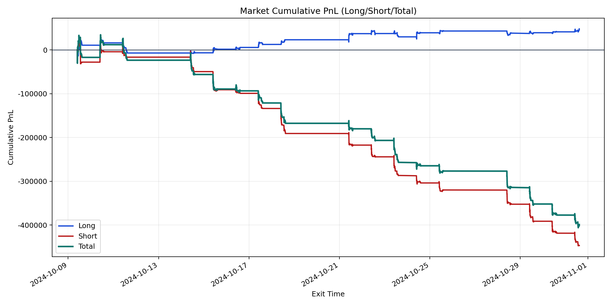
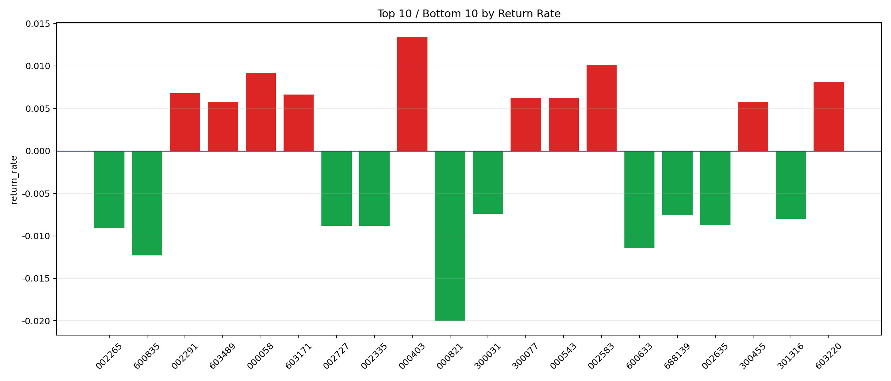

| repo_root | /home/haoranyou/data/output/dynamic_AUM_TAKER_index1000 |
|---|---|
| period_months | 1 |
| period_label | 2024-10-09_to_2024-10-31 |
| start_time | 2024-10-09 09:46:52 |
| end_time | 2024-10-31 14:39:42 |
| n_trades | 20332 |
| n_symbols | 362 |
| total_pnl | -398895.80210000207 |
| long_total_pnl | 48182.01460000191 |
| short_total_pnl | -447077.8167000039 |
| total_entry_notional | 359812341.0 |
| long_entry_notional | 126046325.0 |
| short_entry_notional | 233766016.0 |
| total_return_rate | -0.0011086217915466164 |
| long_return_rate | 0.00038225640136673486 |
| short_return_rate | -0.0019125013308179232 |
| top_symbols_by_return | ["000403", "002583", "000058", "603220", "002291", "603171", "300077", "000543", "603489", "300455"] |
| bottom_symbols_by_return | ["000821", "600835", "600633", "002265", "002335", "002727", "002635", "301316", "688139", "300031"] |

